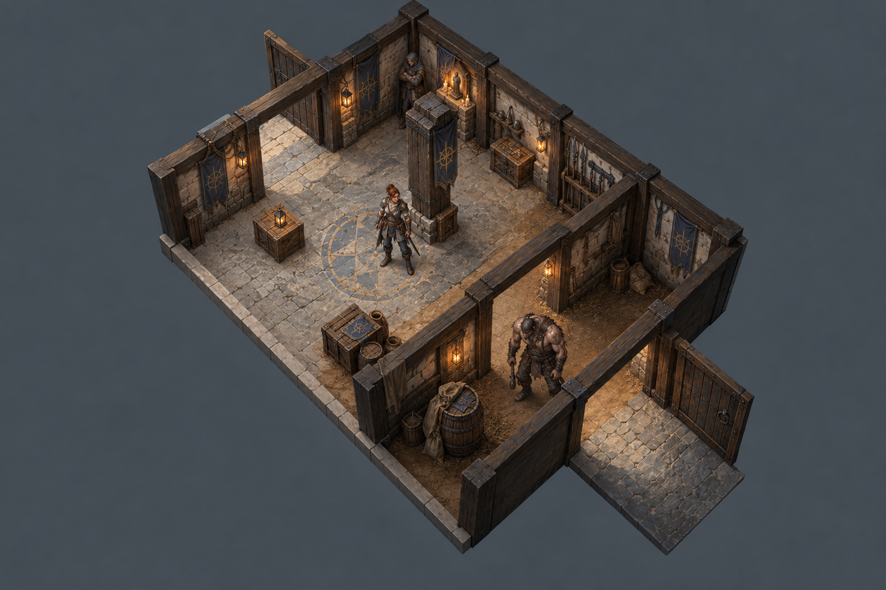
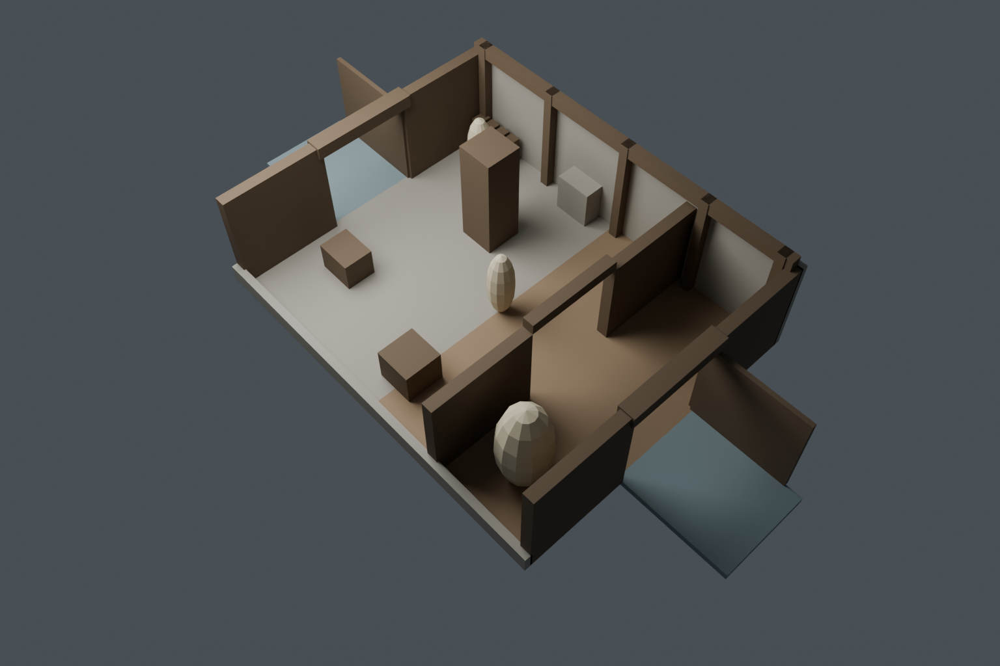
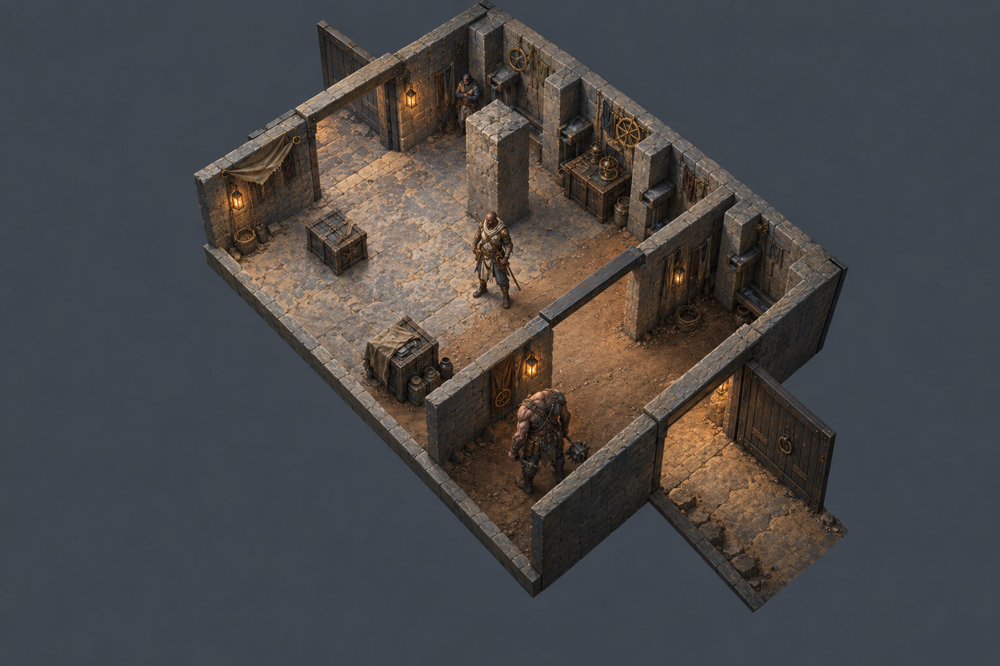
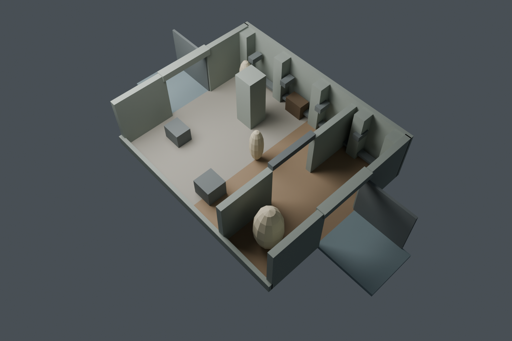
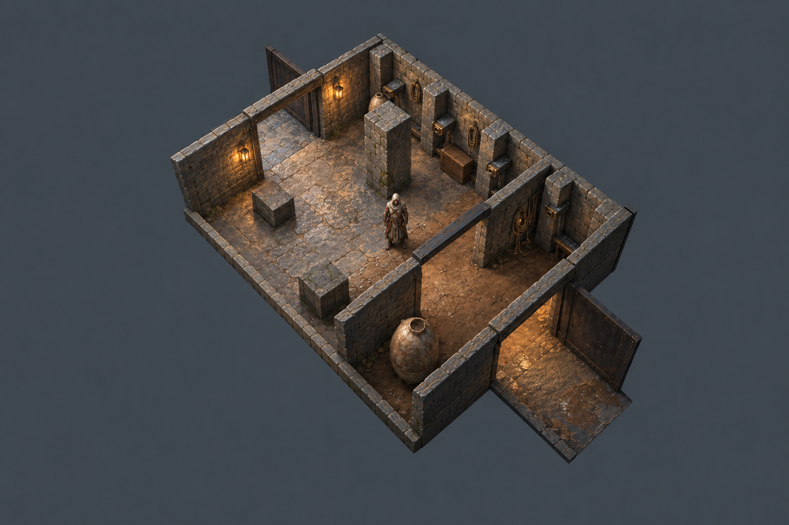

Whole-scene layout test: FAIL. Both initial paintings shift/enlarge geometry. The repair improves framing but replaces required characters/objects with jars/blocks. All originals retained. No fourth generation.
Doorway-side relationship improves: foreground opening shows interior floor behind it; exterior apron lies toward the viewer. Green overlays are exact layout data, not accepted painted boundaries.





Findings and next method · Alignment measurements · Layout/portal data · Matt’s recorded guidance